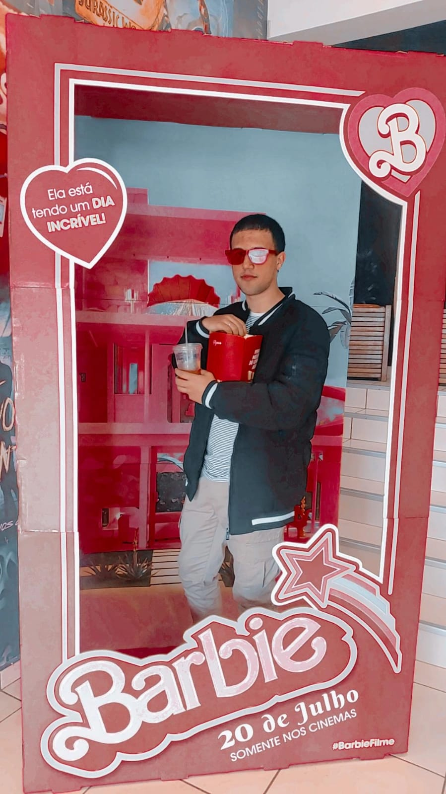
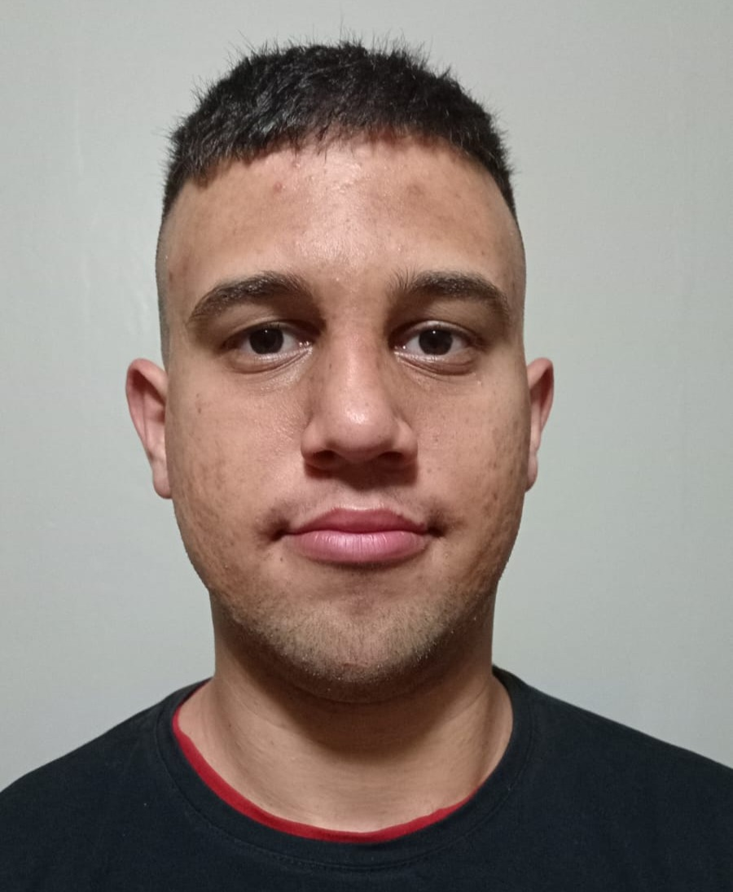

Sobre Mim
Olá! Este é um espaço onde compartilho um pouco da minha jornada e interesses.
Um pouco mais sobre mim

- Nome: Vinicius Sendoski de Andrade
- Ano de Nascimento: 2000
- Estado Civil: Solteiro
- Trabalho: Dispacher
- Escolaridade: Tecnico Integrado ao Encino Medio
Minha Relação com a música
Meu gosto musicai ocila com o tempo, aqui uma breve timeline de musicas que eu lembro ter ouvido ao decorrer dos anos.
Período: 2020 — 2026
Hobbies
Gosto de dividir meus Hobbis em 4 vertentes, não venho tendo tempo sobrando, mas sempre tento aproveitar cada momento de lazer em um deles.
Nos filmes minha preferencia é pela comedia, mas assisto um pouco de tudo, aqui meu ultimos 3 filmes assistidos.
Filmes
Pânico 7
When a new Ghostface killer emerges in the quiet town where Sidney has built a new life, her darkest fears are realized as her daughter becomes the next target. Determined to protect her family, she must face the horrors of her past to put an end to the bloodshed once and for all.

Todo Mundo em Pânico 3
After newspaper reporter Cindy (Anna Faris) accidentally watches a strange videotape that causes the viewer to die within a week, she discovers the tape is only one of many weird happenings. Local farmers Tom (Charlie Sheen) and George (Simon Rex) have reported massive crop circles appearing overnight in their fields. Cindy finds a link between the tape and the crop circles with help from the U.S. president (Leslie Nielsen) and a kindly aunt (Queen Latifah).
Crepusculo
High-school student Bella Swan, always a bit of a misfit, doesn't expect life to change much when she moves from sunny Arizona to rainy Washington state. Then she meets Edward Cullen, a handsome but mysterious teen whose eyes seem to peer directly into her soul. Edward is a vampire whose family does not drink blood, and Bella, far from being frightened, enters into a dangerous romance with her immortal soulmate. Content expanded.
Aqui estão 3 jogos que quero platinar ainda esse ano, esta mais para uma obsessão do que um objetivo.
Jogos

Sniper Ghost Warrior Contracts
Cumpra contratos que oferecem objetivos claros, com recompensas em dinheiro fixas e a possibilidade de concluir desafios bônus para receber prêmios. Os contratos oferecem uma jogabilidade precisa e estratégica graças às centenas de formas de eliminar os seus alvos.

Karryn's Prison
Control the confident, sexy Karryn as she becomes the new Chief Warden in the notorious all-male prison in this RPG. Go manage the prison and its inmates, but can you also manage Karryn's ever rising desires? Experience the true adult game that fully marries adult elements into all gameplay!

Euro Truck Simulator 2
DViaje pela Europa como o rei da estrada, um caminhoneiro que entrega cargas importantes por distâncias impressionantes! Com dezenas de cidades para explorar, a sua resistência, habilidade e velocidade serão levadas ao limite.
No mundo da cultura asistica, minha leitura se aproximo do "manga" coreano chamado Manhwa, tendo esse 3 meus ultimos lidos, obviamente meu genero favorito é romance.
Manhwas

Vamos Esconder Meu Irmão Mais Novo Primeiro
Aos 19 anos, entrei no mundo dos quadrinhos BL. Em um mundo onde a chance de encontrar uma pessoa louca era de uma a dez. “Franz, você pode tirar a roupa um segundo” “Irmã? Por que você está usando essas roupas?” O evento já havia começado. Kaila jurou enfrentar a violência que seu irmão mais novo sofreu. “Eu irei em seu lugar, Franz” “Eles estão chegando. Eles vão aniquilar minha família e como se isso não bastasse, eles iriam devorar a inocência do meu irmão. Eu vou morrer!” Então eu escondi meu irmão mais novo completamente, e na cerimônia oficial, todos decidiram que ele receberia o status oficial. Mas algo está estranho. “Eu! Isto é eu amo Kaila Vesta!”.

O Bebê do Senhor da Terra se Aposenta
Em sua terceira vida, ela renasceu como a única filha de um vilão que não tinha sangue ou lágrimas. Pessoas viviam em uma casa que estava a beira do colapso, então ela planejou um edifício usando o conhecimento de sua vida anterior. Entretanto, seu pai a descobriu e – “Nós aprovamos uma lei que a propriedade do edifício deve ser dado à pessoa que organizou sua construção.” Ela se tornou a dona de um imenso edifício. Vamos apenas fazer um caixa dois e nos aposentar! “A senhorita me impediu de passar fome!” “Eu posso dormir em uma casa nova e quente graças à nossa Senhorita!” “O nível de emprego de todos os jovens cresceu absurdamente!” O que foi que eu fiz? É muita coisa que todo mundo tenha me elogiado tanto assim? Para fazer as coisas piores, meu pai descobriu sobre meu plano de fugir de casa… “O que eu fiz de errado? Vou consertar tudo, então não vá.” “Na-Não é isso…” “Vou te dar tudo que quiser. Oh, certo, o filho do Imperador não te incomodava? Eu também posso cortar o pescoço do Imperador, o que você acha?” Então do nada ele pensou em iniciar uma guerra. “por que eu continuo tendo cada vez mais trabalho?” Na-Não posso me aposentar com segurança?.

Eu Sou a Secretária do Tirano
Tornei-me secretário de um tirano no lugar do meu irmão desajeitado para sobreviver. Mas tenho muito potencial para isso. Eu sou tão bom no meu trabalho. Porque servi tão bem ao tirano, ‘todo mundo tem um final feliz’. Bem, então, devo deixar de ser secretária e viver uma vida de lazer agora? “Rosaline, me diga o que você quer.” Ele perguntou enquanto descia da cadeira. “Eu quero sair.” Suas sobrancelhas se contraíram levemente. “Você quer morrer?” “Sua alteza, você nunca se apega a pessoas que querem ir embora, então por que você está sendo assim comigo?”.
Um gosto que mantenho a uma decada, aqui estão as 2 principais que acompanho atualmente.
Light Novels

The Mech Touch
A Era dos Mechas chegou! Infelizmente, Ves Larkinson não tinha aptidão genética para se tornar um famoso piloto mecânico. Lutando contra seu destino, ele estudou design de mecha para expressar seu amor por mechas de uma maneira diferente e deixar seu pai orgulhoso. Quando Ves se formou na faculdade, ele voltou para uma oficina nova, mas vazia. Seu pai havia desaparecido. Deixado com uma pequena oficina mecânica recém-fundada que seu pai construiu meticulosamente com uma montanha de dívidas, Ves de alguma forma precisa sobreviver com o banco respirando em seu pescoço. Então ele encontrou a salvação de outro legado que seu pai havia deixado. “Bem-vindo ao Sistema do Designer Mecha. Projete seu novo mecha.”

Chosen by Fate, Rejected by the Alpha
Eighteen-year-old Trinity is unlike any other werewolf in her pack. For one, there were unusual circ.u.mstances surrounding her birth, for another, sh e is the only pack member to never shift into a wolf form. So now she doesn't quite belong anywhere. Not quite human and not quite wolf.
Viagens
Não tenho muitas experiencia com viagens, já que so viajei para fora da região de Cascavel uma vez, mas essa esperiencia valeu a pena.
Uma experiencia incrivel, gostaria de revisitar no futuro.


É incrivel de se visitar, não é o ponto turistico mais belo do pais, mas sua historia comprova seu merito.